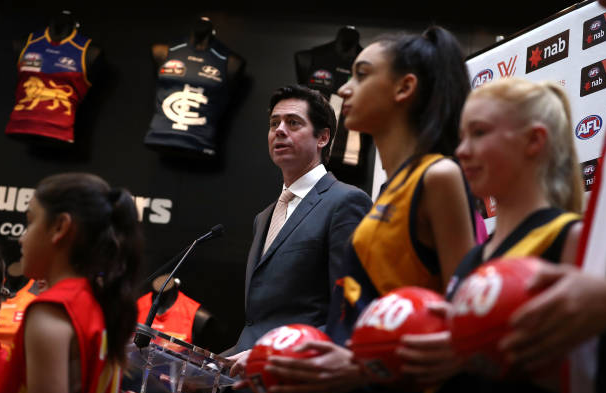

Secondary Data
Throughout researching ways of proving my hypothesis if it is to be true, in terms of collecting different ways to collect Secondary data, my Secondary methods were:
- Newspaper Articles : When I gathered data from newspaper articles, I made notes on those articles
- YouTube Videos : Watched the videos, made notes on those videos
- Government Reports : Accessed government reports to show data trends across many different years, of which I found that the ABS stated that participation rates have increased dramatically after 2015 (Which was after the inclusion of the AFLW).
- Statistical analysis organisations : Accessed Statistical Analysis Organisations to show data trends across many different years, of which I found that the Roy Morgan site stated that participation rates have increased dramatically after 2015 (Which was after the inclusion of the AFLW).

Summary on Secondary Data collected
- “10 % increase on the previous year” - this is female statistics from 2018 to 2017
- 30% of all participants that play Australian Rules football are females - this is a massive improvement from other years
- 76% rise since the inclusion of the AFLW - this is in relation to female participants
- In the year 2016, female participation rates increased by 19%
- Number of girls playing Auskick increased by 21% - a lot more girls now coming into the game
- Female community club teams have increased by 56% after inclusion of AFLW.
- In 2006 ,the ABS mentioned that females that play Australian Rules Football were at 9% - this was before inclusion of the AFLW meaning that less females were playing the sport.
- Roy Morgan statistics mentioned a direct 20% increase after the inaugural season of the AFLW.
- At local levels, Local clubs in the outskirts of SA, where the Herald Sun reported that many of the local clubs have had a 50 to 75% increase in female participation rates since the inclusion of the AFLW.
- In South Australia, there were only 10 female comps in the state in 2014 (Before the AFLW), now there are 47 comps (After the AFLW).
- In 2017, South Australian football association noted that an extra 46,364 females played the sport compared from 2017 to 2018
- Deakin University noted from Prof. Pamm Phillips noted the family environmentally friendly atmosphere the AFLW brings to girls playing the sport, of which young girls will see this as an opportunity in the growth and development of the sport.
- St. Catherine's College, Toorak noted how many young girls are now playing Australian Rules football at lunchtimes since the inception of the AFLW, before that it was noted by the school’s principal that she had never seen any girls playing any form of Australian Rules Football before the inclusion of the AFLW.